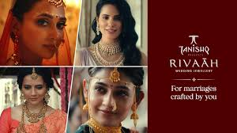
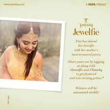

How India's jewellery leader won through emotional storytelling and participation scale, not bridal clichés.
Tanishq rejected bridal clichés for emotional truth + participation scale. Remarriage film redefined wedding meaning. Jewelfie made customers brand storytellers.
Analysis covers Remarriage Film (2013) — cultural repositioning masterpiece — and Jewelfie (2019) — UGC engagement phenomenon. Perfect brand-building duality.
Jewellery category benchmark: meaning first, metal second.
India's remarriage taboo was evolving. Tanishq captured this tension perfectly—child's perspective made controversial human. No forced jewellery shots. Story first.
Targeted progressive urban influencers who shape culture. Repositioned weddings as inclusive, not traditional. TV → earned media explosion through debate. Restraint created memorability.
"Broke every jewellery cliché. Child's acceptance angle transformed risk into emotional genius. Long-term brand equity far exceeded short-term sales."
Psychological funnel: Awareness → Emotional connection → Cultural conversation → Brand recall. High-risk, high-reward executed flawlessly.

Insight: every jewellery piece has a story. Solution: selfie + story = Jewelfie. Zero friction participation during festive season. Influencers accelerated, users owned.
Instagram-native execution exploded. Thousands participated, millions impressed. Rewards + reposts created self-sustaining loop. Brand outsourced storytelling to audience perfectly.
"Users didn't advertise—they shared personally. Low-friction mechanics + emotional hook = massive scale. Festive timing maximized relevance."
Clear funnel: Influencer awareness → User participation → Brand validation → Social proof → Repeat engagement. Measurable ROI through entries and impressions.

Remarriage reality captured perfectly. Brands win by reflecting evolving truths, not reinforcing traditions.
Jewellery existed but didn't interrupt. Emotional restraint creates deeper connections than forced placements.
Progressive urban shapers, not mass. Cultural influencers multiply brand voice exponentially.
Jewelfie selfie simplicity exploded scale. Easy mechanics beat complex creative every time.
Reposts + rewards created momentum. Participation campaigns need built-in amplification.
Narrative builds meaning. Participation builds reach. Both required for category leadership.
Tanishq mastered jewellery marketing duality: Remarriage Film built emotional depth, Jewelfie built participation scale. Stories + selfies = unbeatable combination.
Core truth: people buy meaning, not metal. Tanishq made jewellery about human stories—progressive weddings, personal memories. Category leadership through emotional ownership.
Brands must alternate: depth for equity, scale for visibility.
At Brand Business Talk, we help brands with research, strategy, market insights, and growth recommendations. Let's build your brand growth strategy together.